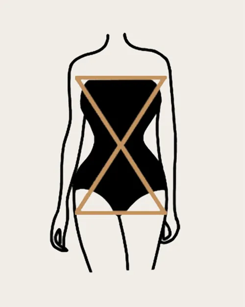

The hourglass figure is one of four traditional female body shapes described by the fashion industry. The hourglass shape is defined by a woman's body measurements- the circumference of the bust, waist and hips. Hourglass body shapes have a wide bust, a narrow waist, and wide hips with a similar measurement to that of the bust. This body shape is named for its resemblance to that of an hourglass where the upper and lower half are wide and roughly equal while the middle is narrow in circumference, making the overall shape wide-narrow-wide.
